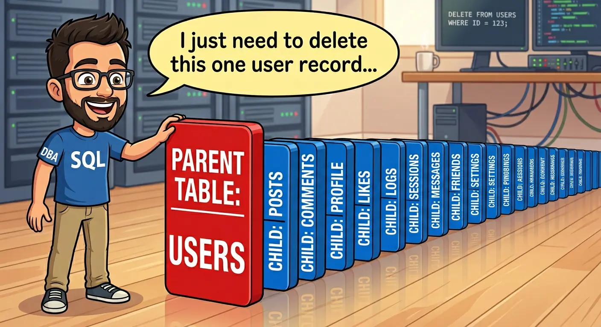
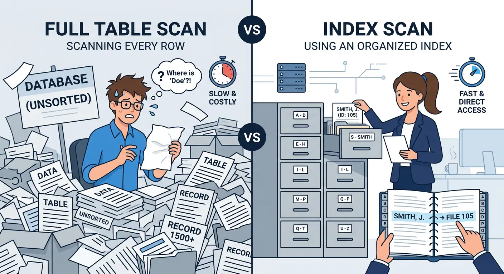
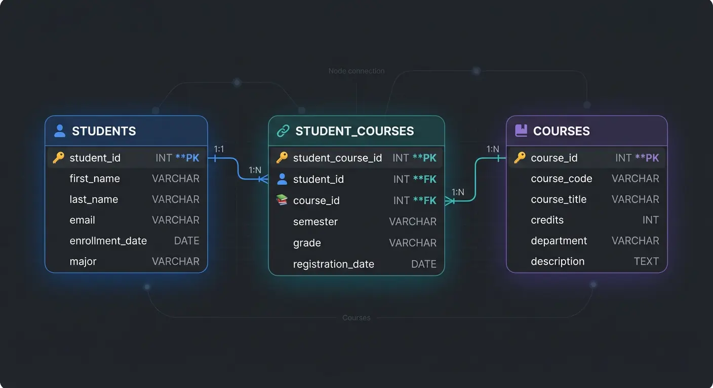
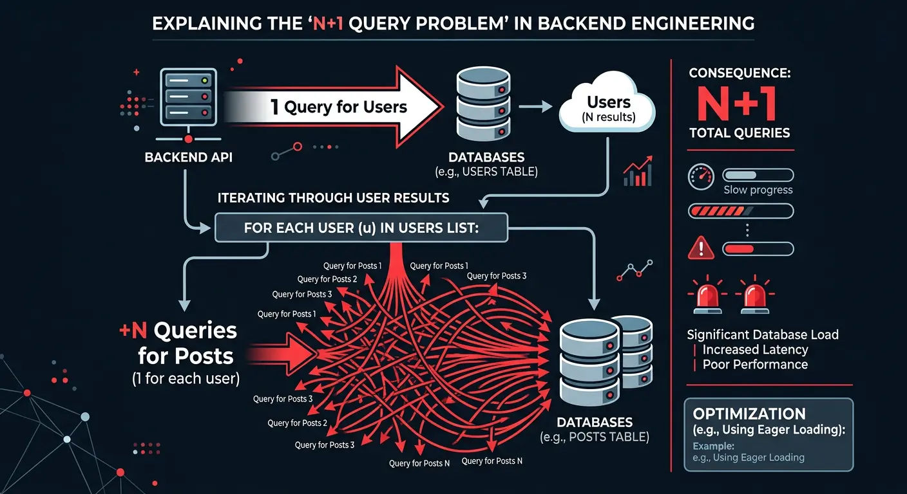
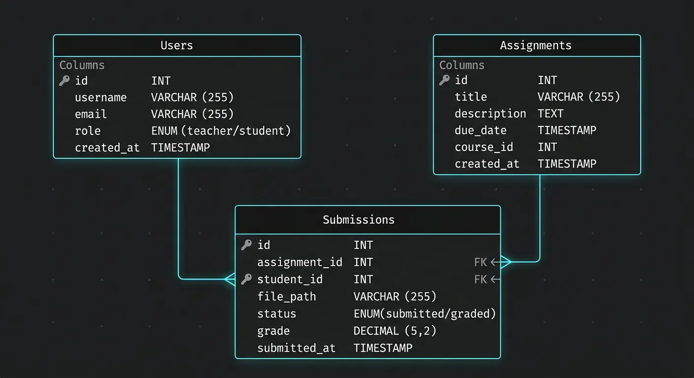

I've seen more apps die from bad schemas than bad algorithms. A poor design choice on day one becomes a migration nightmare on day one hundred. If you treat your database like a spreadsheet, you're already in trouble. Here are the mistakes I see repeatedly that kill performance as traffic grows.
Table of Contents
- Why Database Design Matters
- Mistake #1: Missing or Poor Primary Keys
- Mistake #2: Wrong Normalization Strategy
- Mistake #3: Ignoring Indexes
- Mistake #4: Poor Relationship Design
- Mistake #5: Designing Without Scale
- Mistake #6: The N+1 Query Problem
- Mistake #7: Storing Money as Float
- Mistake #8: Ignoring Transactions
- Mistake #9: Ignoring Database Security
- Real Example: Assignment System
- Practical Checklist
Why Database Design Matters in Real Applications
The database is usually the hardest part to scale. You can refactor code in a sprint. Changing a schema with millions of rows takes weeks and often downtime.
Good design buys you:
- Performance: Queries run in milliseconds, not seconds.
- Data Integrity: The database prevents invalid states (like an order without a user).
- Developer Velocity: A clean schema is easier to code against.
Mistake #1: Missing or Poor Primary Keys
Every table needs a primary key (PK). It’s the row's identity. Without it, ORMs break and referencing data is impossible.
The debate usually lands on Auto-increment vs. UUIDs:
- Auto-increment (Integers): Good for performance and sorting. Bad for distributed systems (collisions) and security (guessable IDs).
- UUIDs: Great for scale and security. However, they are larger (128-bit) and can fragment indexes if not handled correctly (e.g., using UUIDv7).
The Rule: Just pick one, but never rely on implicit row IDs. Define a PK explicitly.
Mistake #2: Wrong Normalization Strategy
Textbooks love the Third Normal Form (3NF). In production, strict adherence to 3NF can kill read performance.
- Over-normalization: If you need 8 joins just to display a user profile, you’ve gone too far.
- Under-normalization: Storing redundant data leads to data rot (changing data in one place but forgetting another).

The Tradeoff: Normalize for write-heavy data to ensure integrity. Denormalize cautiously for read-heavy data to avoid expensive joins.
Mistake #3: Ignoring Indexes
This is the #1 cause of slow apps. Without an index, the database performs a Full Table Scan—it looks at every single row to find what you asked for.

-- Slow Query (Full Table Scan)
SELECT * FROM users WHERE email = 'test@example.com';
-- Fast Query (Index Scan)
CREATE INDEX idx_users_email ON users(email);However, indexes aren't free. They speed up reads but slow down writes because the index must be updated too. Index columns you frequently filter (`WHERE`) or sort (`ORDER BY`) on. Don't index everything.
Benchmark Reality Check
Querying 1 million rows for a specific email:
- Without Index: ~450ms (Full Table Scan)
- With Index: ~8ms (B-Tree Lookup)
That is a 50x performance improvement with one line of SQL.
Mistake #4: Poor Relationship Design
Don't store relationships as comma-separated lists. Storing `1,2,3` in a `course_ids` column is a trap. You can't join on it efficiently, and you can't index it.
Good Design: Use a Junction Table for Many-to-Many relationships.

Also, use Foreign Keys. They stop you from creating "orphan" records that point to nowhere.
Mistake #5: Designing Without Thinking About Scale
It works on localhost with 10 rows. Will it work with 10 million?
- Pagination Strategy: Avoid
OFFSETpagination for large datasets (it gets slower the deeper you go). Use Cursor-based pagination. - Data Types: Don't use `VARCHAR(MAX)` for everything. It wastes storage. Use the smallest data type that fits.
- Archival Strategy: Plan for how you will handle old data before your logs table eats all your storage.
Mistake #6: The N+1 Query Problem (The ORM Trap)
ORMs make fetching data too easy. The N+1 problem is classic: fetching a list (1 query) then looping to fetch related data (N queries).

// BAD: Triggers 1 query for users + N queries for posts
const users = await db.users.findMany();
for (const user of users) {
user.posts = await db.posts.findMany({ where: { userId: user.id } });
}
// GOOD: Eager loading (1 or 2 queries total)
const users = await db.users.findMany({
include: { posts: true }
});Mistake #7: Storing Money as Float
Never use FLOAT for money. Computers are bad at binary fractions.
The Problem: 0.1 + 0.2 often equals 0.30000000000000004. In finance, this penny-shaving adds up to major errors.
The Fix: Use DECIMAL in SQL, or store values as integers (cents). Your accounting team will thank you.
Mistake #8: Ignoring Transactions
If you deduct money from User A but the server crashes before adding it to User B, money vanishes. Transactions ensure atomicity—either everything happens, or nothing does.
BEGIN TRANSACTION;
UPDATE accounts SET balance = balance - 100 WHERE user_id = 1;
UPDATE accounts SET balance = balance + 100 WHERE user_id = 2;
COMMIT; -- Only saves if both updates succeededMistake #9: Ignoring Database Security
Your database needs its own armor.
- SQL Injection: Never concatenate strings into queries. Always use Prepared Statements.
- Least Privilege: Don't connect as
root. Create a specific user with only the permissions it needs.
Mini Real Example: Assignment Submission System
Let's look at a classroom app schema to see these principles in action.

The Tables
- Users: PK `user_id` (UUID).
- Assignments: PK `assignment_id` (UUID).
- Submissions: This is the junction table. It links `user_id` and `assignment_id`.
The Common Mistake
Beginners often forget the composite unique constraint on the Submissions table. Without it, a student can submit the same assignment twice, and your code has to handle the mess.
CREATE TABLE submissions (
submission_id UUID PRIMARY KEY,
user_id UUID REFERENCES users(user_id),
assignment_id UUID REFERENCES assignments(assignment_id),
submitted_at TIMESTAMP DEFAULT NOW(),
-- This constraint prevents a student from submitting the same assignment twice
UNIQUE (user_id, assignment_id)
);Practical Checklist: Before You Finalize
Before you commit that schema, run it through this checklist:
- Does every table have a Primary Key?
- Are Foreign Keys defined to enforce integrity?
- Are frequent query columns (like `email` or `status`) indexed?
- Is the normalization level appropriate for the read/write ratio?
- Have you handled Many-to-Many relationships with junction tables?
- Are data types optimized (e.g., not using strings for dates)?
Conclusion
A good database schema scales silently. A bad one becomes the loudest, most expensive part of your stack. Don't just create tables; design a foundation.
Disclaimer: This article was written and edited by Pranav R. AI tools were used for assistance with drafting and visual assets.